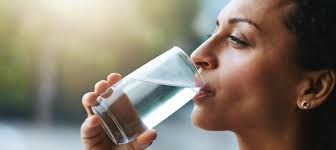

Hidratación: Mantiene el equilibrio de los fluidos en el cuerpo, lo que es clave para la digestión, la circulación y la regulación de la temperatura. Salud de la piel: Ayuda a mantener la piel hidratada y puede mejorar su apariencia, reduciendo la sequedad y las arrugas. Eliminación de toxinas: Favorece la función renal y ayuda a eliminar toxinas a través de la orina y el sudor.


Energía y concentración: La deshidratación puede provocar fatiga y dificultad para concentrarse. Beber agua regularmente mantiene la mente alerta. Salud digestiva: Facilita la digestión y previene el estreñimiento al ayudar a mover los alimentos a través del sistema digestivo. Regulación de la temperatura corporal: Especialmente importante en climas cálidos o cuando haces ejercicio.

Lubricación de las articulaciones: El agua es un componente esencial del líquido sinovial, que ayuda a reducir la fricción entre los huesos y previene dolores articulares. Regulación del apetito: Beber agua antes de comer puede hacer que te sientas más lleno y, en algunos casos, ayuda a evitar el consumo excesivo de calorías. Mejora del rendimiento físico: Si estás activo o practicas deporte, mantenerte hidratado mejora la resistencia, la fuerza y reduce la fatiga.

Músculos: El agua interviene en la contracción de los músculos. Huesos y dientes: El agua proporciona minerales esenciales como el calcio, magnesio y el flúor, que sirven para fortalecer los huesos y los dientes. Cerebro y nervios: El agua participa en el buen funcionamiento del cerebro y de los nervios.